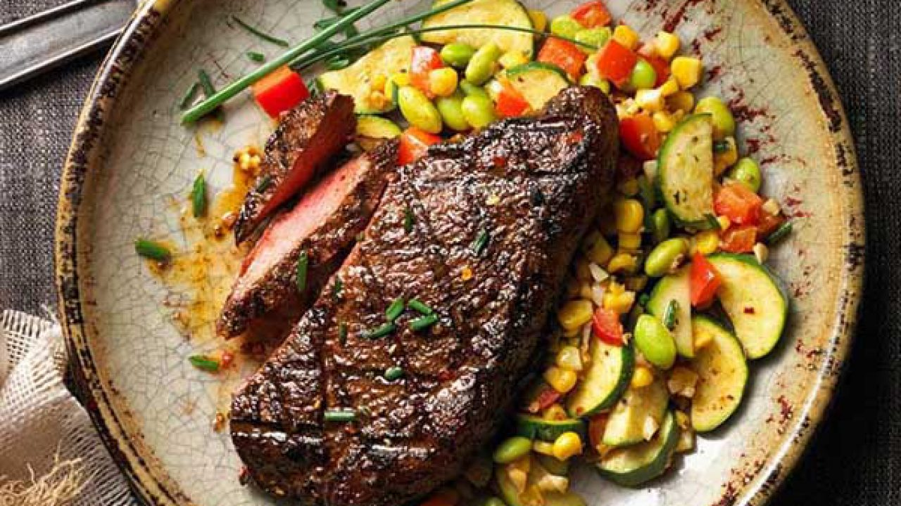

Cách làm bò bít tết bằng chảo mềm ngon chuẩn vị nhà hàng
Bò bít tết là món ăn sang trọng, miếng thịt bò to, thơm ngon, bên trong vẫn còn màu hồng đỏ hấp dẫn, dưới đây là chi tiết cách làm thịt bò bít tết tại nhà.
Bò bít tết là món ăn chính của phương Tây có xuất xứ từ Mỹ, đặc trưng của món ăn là miếng thịt bò to, mềm, khi thái ra vẫn còn màu hồng chín tái, với hương vị thơm ngon, thịt ngọt chấm với sốt tỏi hoặc nấm... Khi ăn nhâm nhi cùng chút salad hay khoai tây chiên, cảm giác thật là tuyệt.

1. Hướng dẫn chuẩn bị nguyên liệu cho 4 người
- 500g thịt bò ngon
- 45ml dầu hạt cải
- 15ml rượu vang đỏ
- Muối và hạt tiêu vừa đủ
- 4 củ khoai tây, 4 quả trứng
- 1 củ tỏi, 1 củ gừng, nước vắt của một quả chanh
Lưu ý khi chọn thịt bò
- Có 3 phần thịt mà chị em có thể chọn để làm bò bít tết là thịt thăn nội, thịt thăn ngoại và thịt thăn vai trong đó, thăn nội có thể được xem là phần ngon nhất của một con bò. Thịt thăn nội được cắt ra từ phần lưng phía trong của bò, đặc biệt là ở phần cuối thắt lưng. Loại thịt này rất thích hợp để chế biến món bít tết dày.
- Còn thăn ngoại cũng là một loại thịt mềm để làm các món nướng.
- Thăn vai là thăn phi lê có xương hình chữ T.
2. Cách làm thịt bò bít tết
Bước 1: Sơ chế thịt bò
- Thịt bò rửa sạch, thấm khô. Thái miếng dày khoảng 1.5-2cm.
- Cắt bỏ phần mỡ, gân thịt bò nếu có.
- Dùng búa chuyên dụng hoặc có thể dùng một chiếc chảo gang đập dập miếng bò, với cách này thịt bò mềm hơn khi nấu.
Bước 2: Cách ướp bò bít tết
- Thịt bò sau khi được làm mềm sẽ được ướp với 2 thìa nước ép tỏi và gừng. Như thế khi chiên thì sẽ ko bị cháy tỏi.
- Rắc muối và hạt tiêu vừa đủ lên miếng thịt bò.
- Ướp bò bít tết trong vòng 30 phút
Bước 3: Chiên khoai tây, trứng
Khoai tây được chiên chín vàng, vớt ra giấy thấm khô, trứng ốp chín tới

Bước 4: Chiên tỏi
- Tỏi bóc vỏ, thái thành các lát mỏng. Nếu tỏi có lõi xanh thì bỏ lõi đi nhé.
- Đun nóng dầu ăn trong chảo ở nhiệt độ trung bình thấp rồi cho tỏi vào xào cho đến khi tỏi có màu vàng nâu. Sau đó cho tỏi ra khăn giấy còn dầu chiên tỏi thì để riêng ra một bát.
Bước 5: Làm bò bít tết bằng chảo
- Đun nóng chảo, đổ 1 chút dầu đã chiên tỏi vào. Khi chảo nóng nhưng chưa bốc khói, lúc đó dầu đã sẵn sàng để cho thịt bò vào.
- Cho thịt bò vào, chiên thịt trong 1,5 phút. Không lật thịt hay di chuyển thịt trong thời gian này. Bạn có thể nhấn thịt nhẹ nhàng xuống để thịt nhanh khô. Sau đó, lật thịt và nấu thêm trong 1,5 phút. Nếu là thịt bò Kobe Mỹ thì chiên mỗi bên mặt thịt là 2 phút.
- Bóp đều nước chanh và rượu vang lên hai miếng thịt. Cho thịt ra đĩa, để nguội bớt rồi thưởng thức với salad, khoai tây chiên và tỏi chiên mà bạn thích.
Bước 6: Cách làm nước sốt bò bít tết
Nguyên liệu: Tiêu đen: 20g; dầu hào: 1 thìa canh; rượu trắng: 1 thìa canh; tỏi: 3 tép; cà chua: 1 quả; gừng: 1 nhánh nhỏ; giấm ngon: ½ thìa cà phê; xì dầu: ½ thìa canh; bột năng: 1 thìa cà phê; đường: ½ thìa cà phê; dầu ăn: 2 thìa cà phê.
Cách làm: Tiêu đen bạn đem giã nhỏ vừa phải. Cà chua rửa sạch, bóc bỏ vỏ rồi thái hạt lựu. Tỏi bóc vỏ, băm nhỏ. Gừng: cạo sạch vỏ rồi thái sợi
- Chuẩn bị một bát con, sau đó cho dầu hào, đường, xì dầu, rượu, giấm vào bát và khuấy tan hỗn hợp. Cuối cùng cho bột năng vào khuấy đều nữa là được.
- Bắc chảo lên bếp, sau đó cho dầu ăn vào đun nóng, rồi cho tỏi băm và gừng thái sợi vào và phi thơm. Tiếp đến bạn cho cà chua vào, xào đến khi chín thì mới cho tiêu giã vào. Giờ thì chỉ cần cho hỗn hợp đã trộn ở trên vào, khuấy đều. Hạ nhỏ lửa lại và tiếp tục nấu cho đến khi bạn thấy nước sốt có dạng sánh là bạn đã có phần nước sốt ngon tuyệt vời rồi đấy.
Yêu cầu thành phẩm:
- Bít tết bò có màu nâu đỏ, hơi xém cạnh bắt mắt.
- Phần bên trong thịt chín tới, mềm, không dai, thịt có vị ngọt tự nhiên của thịt bò
- Ăn kèm với khoai tây, trứng có thể kèm bánh mỳ